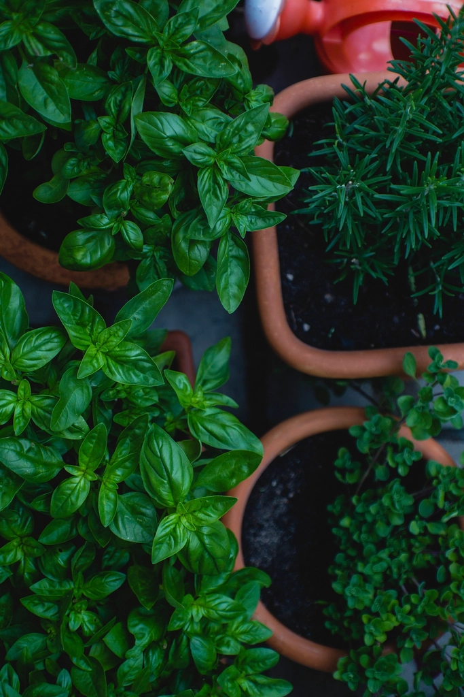
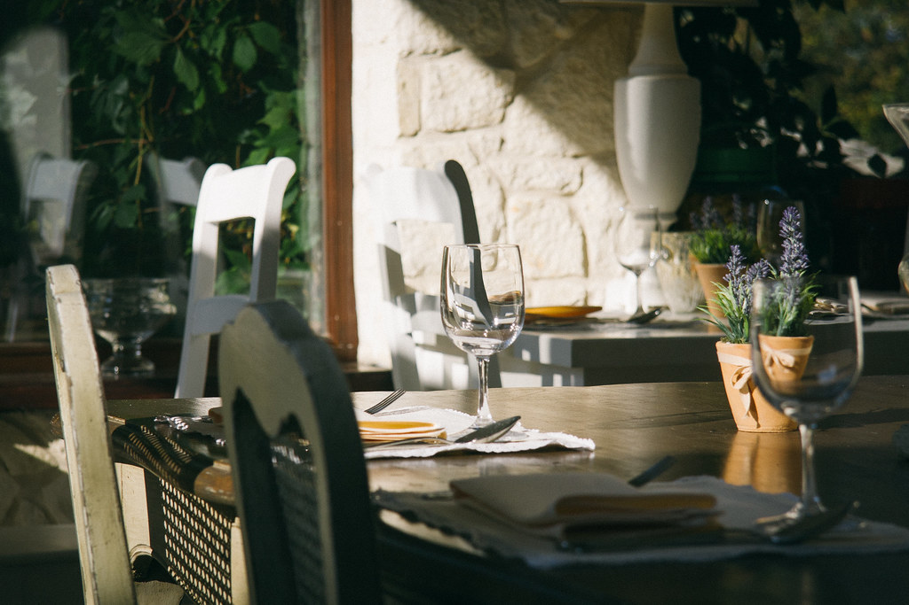
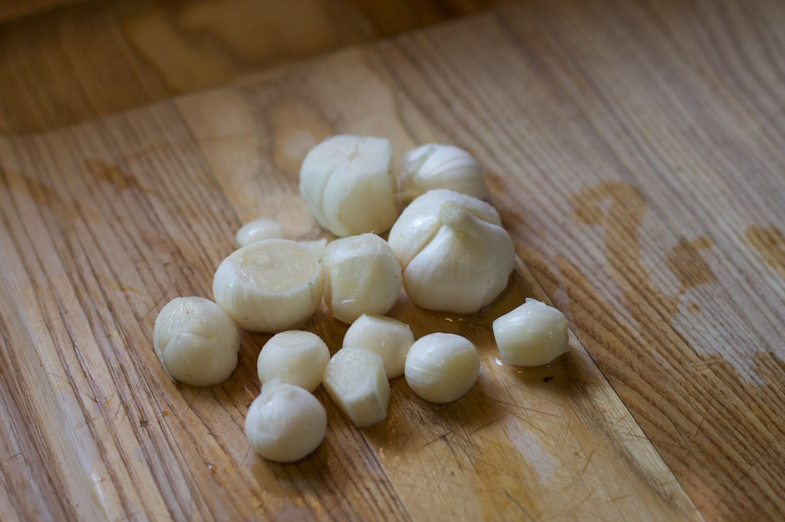

柏の街にたたずむ、小さな洋風レストラン trois fils(トロワフィス)。
フレンチテイストを感じさせる料理と、肩肘を張らない落ち着いた空間で、日々の食事のひとときをお迎えします。
一人の時間にも、大切な人との時間にも、気負わず立ち寄っていただける店であることを大切にしています。


お客様の声
イメージ例
「友人との近況報告にちょうどいい、落ち着いたお店でした。料理の盛り付けも綺麗で、話が途切れなく弾みました。」
ご来店のお客様(女子会利用イメージ)
イメージ例
「記念日に利用しました。特別な日を静かに過ごせる雰囲気で、スタッフの方の対応もあたたかかったです。」
ご来店のお客様(記念日利用イメージ)